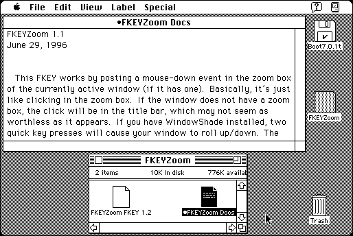

Download
FKEYZoom.zip (4K) FKEYZoom 1.2 repackaged into a zipped hfs disk image and checksum file. The disk image can be mounted with Mini vMac.
FKEYZoom.sit.hqx (4K) FKEYZoom 1.2 in the original format.
copyright: Cliff Harris
mod date: Nov 9, 1997
license: Freeware
from url :
Freeware Written by Cliff Harris
“FKEY that zooms the currently active window.” Appears to require System 7.

If you find these downloads useful, please consider helping the Gryphel Project, which hosts them.
Here are the md5 checksums for the downloads, signed with Gryphel Key 5:
--------- GRY SIGNED TEXT --------- 595699e0b100c0244b70024cc8324b92 FKEYZoom.zip 410de9c5428c21f2cd2399cdee7844bb FKEYZoom.sit.hqx ------- BEGIN GRY SIGNATURE ------- Gry/4Xa8CFcUzxdN/P5rLukpFlXWXXA/2fojG5L3GBPO7pMORtpgzYd8nlsluKOK ckKsv37bSMrH7AuVUcXR7sFglVDmXdQXHDD93Fvabj2mTP/xvEdu8zkD1icfdf8c eWIbao+1GQfXwcIfNHYqrvN8zSp5Rqb5JqctHcWVKuM8WZx9ylWMHsK+9TKqr8Pz -------- END GRY SIGNATURE --------